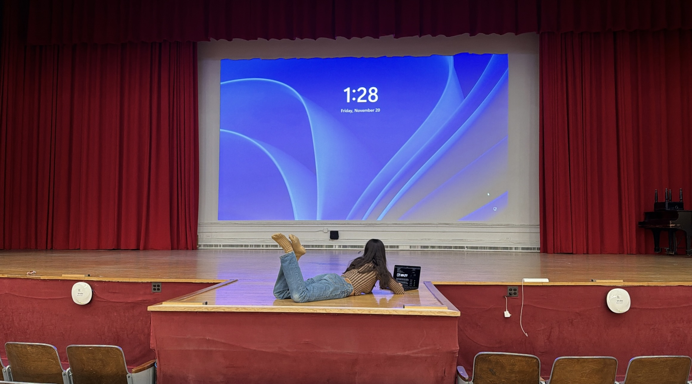
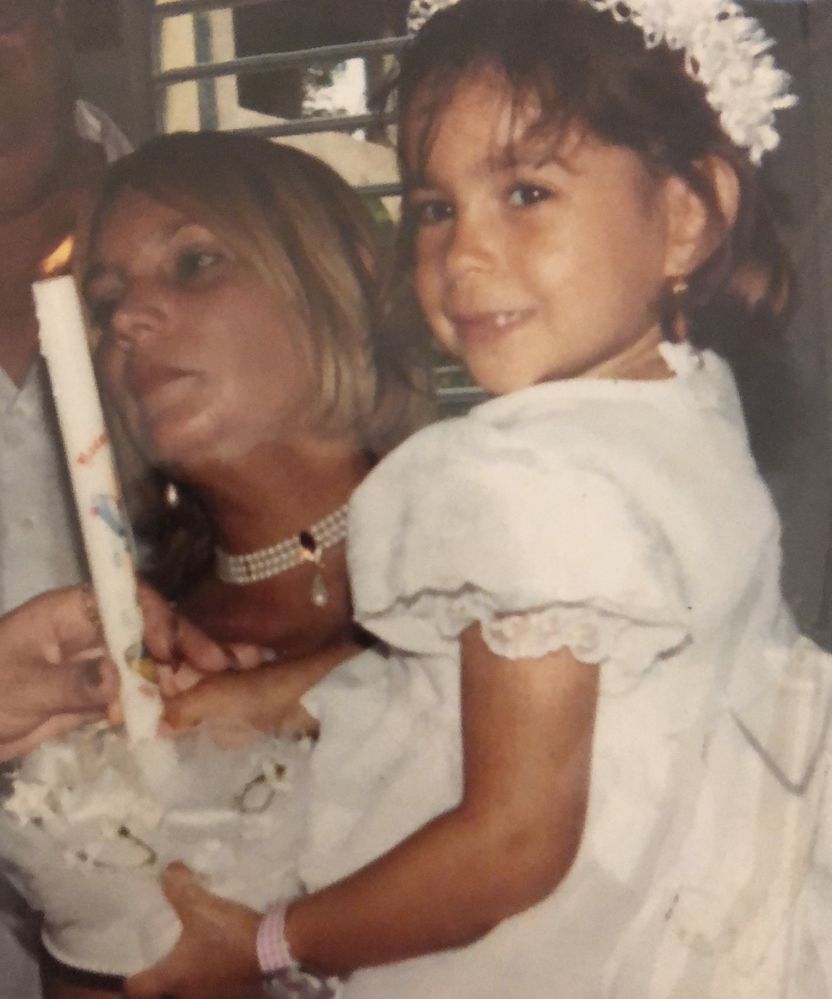
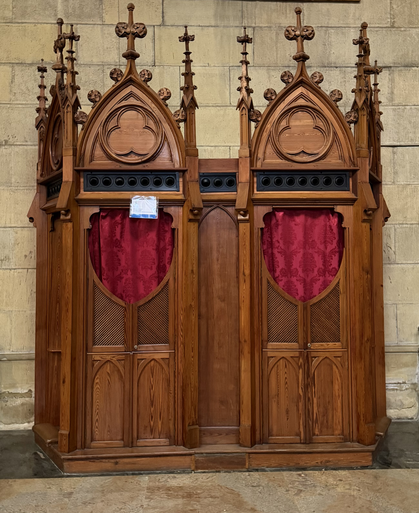
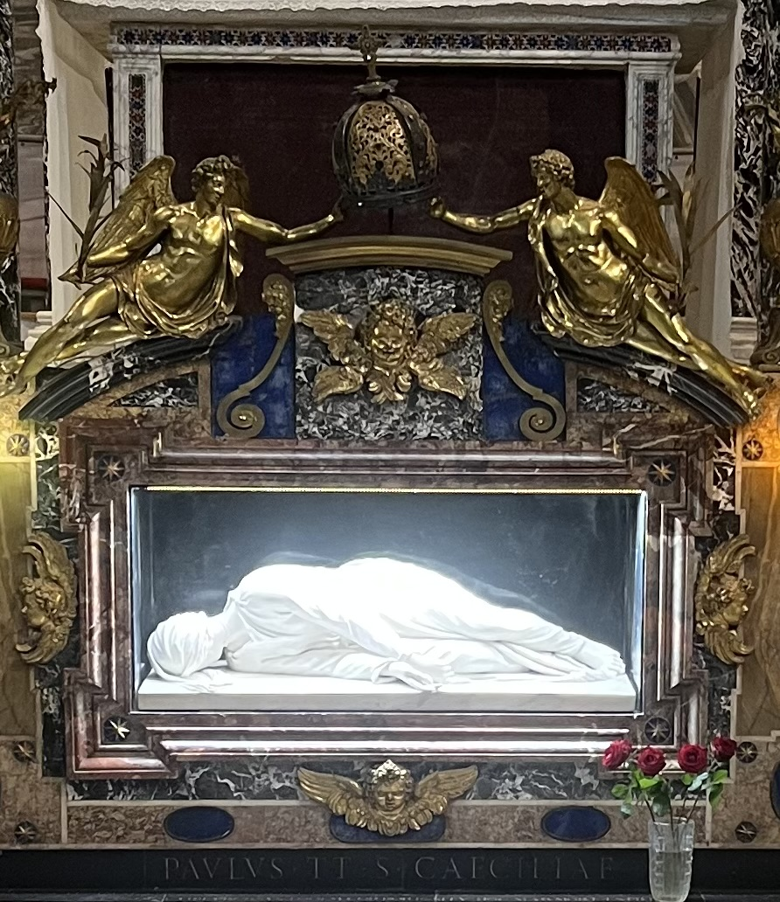
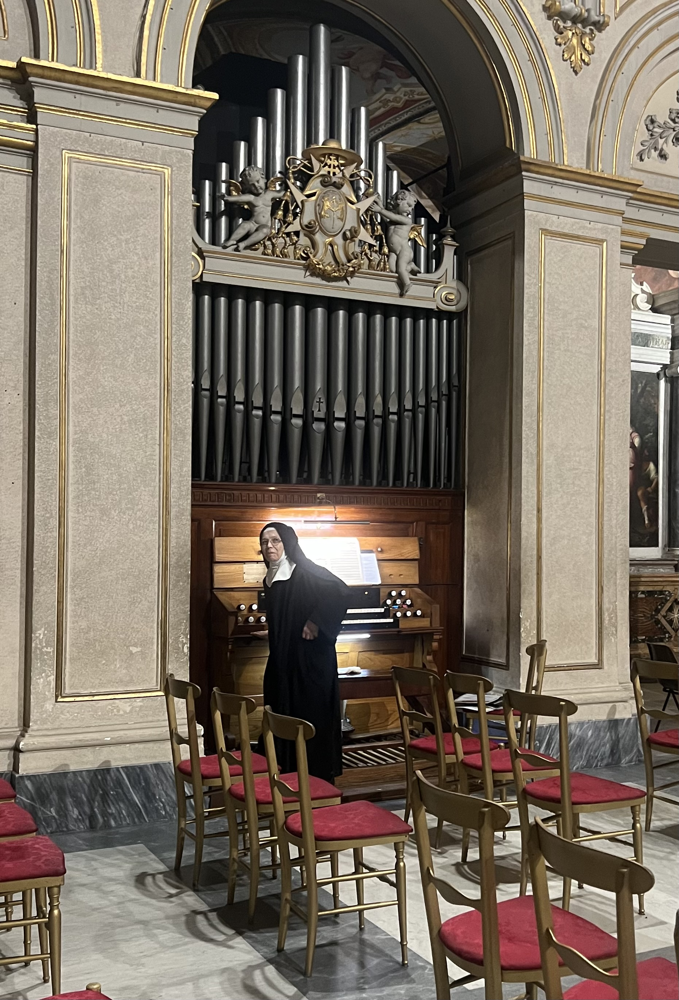
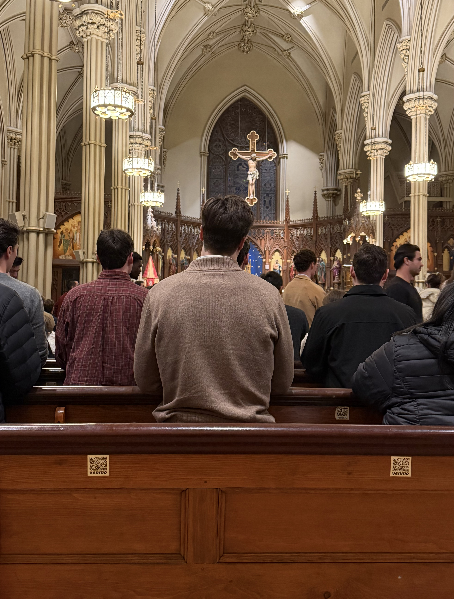
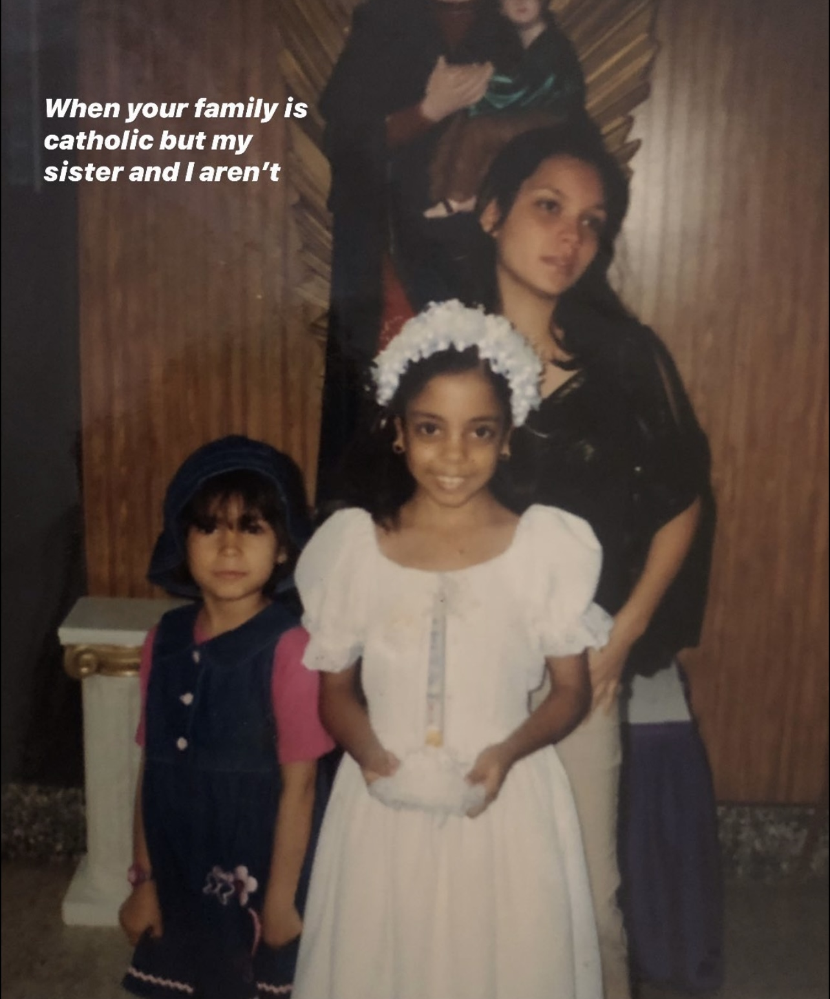
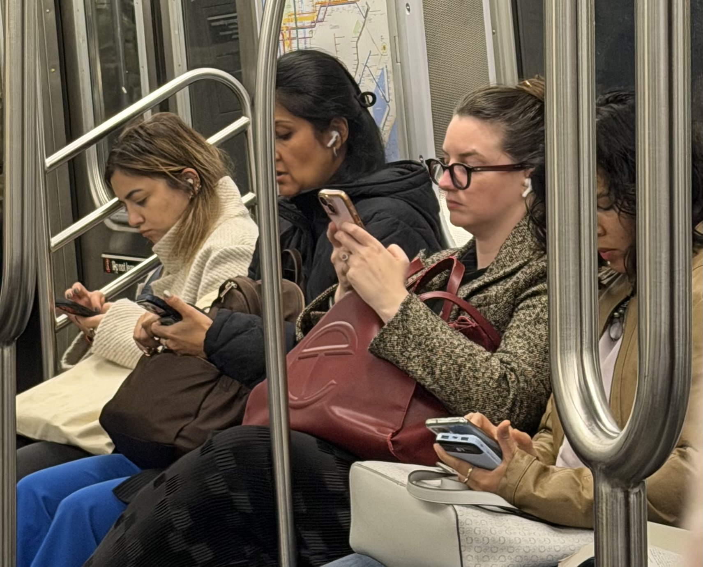
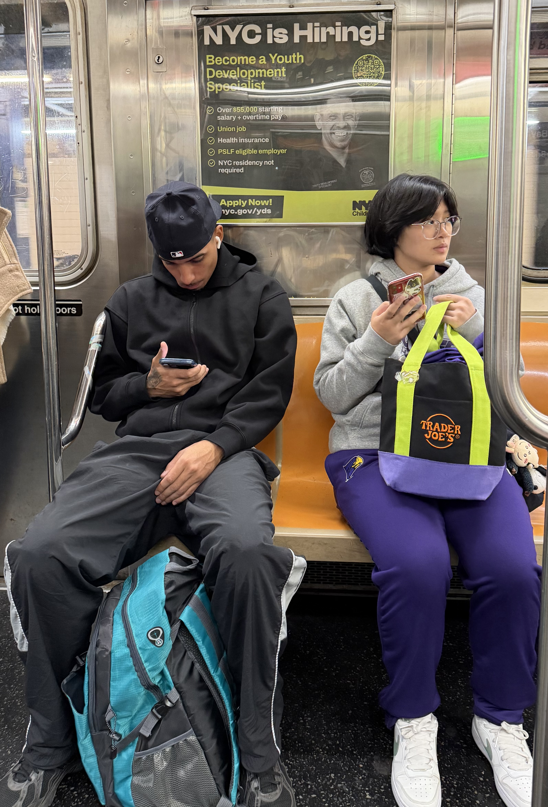
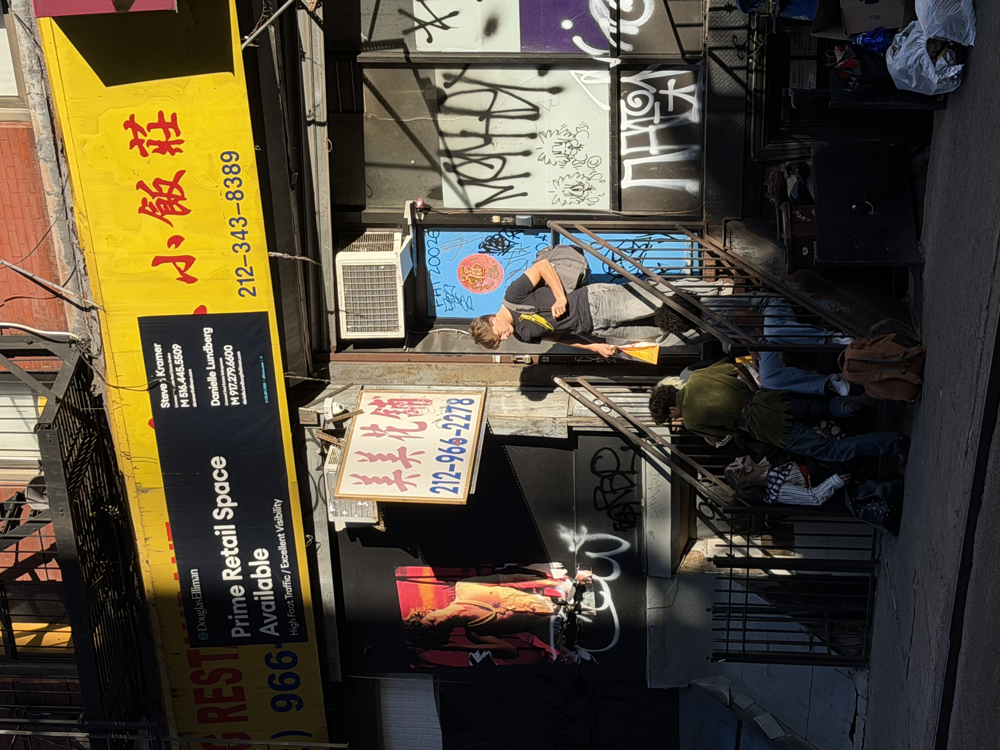

CHATROOM Inspiration: ICQ Chat and early 2000s internet chatrooms Project Format: Interactive website/installation Project Abstract: Chatroom is an interactive web installation inspired by the anonymous internet chatrooms I used as a teenager, particularly ICQ's IRC-style chat. Visitors will enter a main chat, be assigned a random username, and explore different rooms, including Confession Room, USA Room, Spanish Room, French Room, and Broken Hearts Room. Each room will have its own atmosphere, curated by me through music, photography, videos, and visual elements, while communication between visitors will remain exclusively text based. With this project, I want to bring back the excitement of meeting strangers online in a more spontaneous, playful, flirty, and old-school way, without the presence of social media profiles, dating apps, or algorithms. Project Description: Although Chatroom will primarily exist online (I want it to be a physical installation eventually), I want its audience to come from different physical spaces throughout New York City. I want to walk around the city and hand invitations to the most random people, not just hipsters or artsy-looking ones. I also want to distribute posters with QR codes in places such as subway stations, emergency rooms, universities, restaurants, and strip clubs. The more diverse the audience, the more fun and unpredictable the experience becomes. Having a Spanish-speaking chatroom is particularly important to me. I worked in restaurants in NYC for almost three years, and many of my coworkers were Central American immigrants who spoke little or no English. Latinos run the kitchens of this city, yet many experience extreme loneliness. Long workweeks of six or seven days, language barriers, and circumstances surrounding their immigration status can make socializing difficult. I would love for this project to create another possibility for connection. Much of the visual inspiration comes from my Catholic upbringing. When I started exploring chatrooms, I attended a very strict Catholic school where I got suspended for things like wearing my skirt too short or wearing a pink Che Guevara shirt my dad brought me from NYC. Despite the prudishness and constant expectation of being a good Catholic girl, my friends and I had a lot of fun being a little blasphemous. I remember preparing for our first communion, gossiping about how fine the Spanish priest was while we were all wearing our angelic white dresses, ready to confess our sins to a handsome man for the first time. Unconsciously, I drew inspiration from confession booths, organ music, religious illustrations, and the beauty of Catholic churches. I see a parallel between religious confession and anonymous chatrooms: both allow us to reveal intimate things while maintaining a certain degree of anonymity. Visually, I want to combine Catholic imagery with nostalgic computer interfaces, pastel colors, cursive typography, and physical invitations. Ultimately, Chatroom is an invitation to revisit the intimacy, mystery, and unpredictability of talking to strangers on the internet and to bring people back together., and physical invitations. Ultimately, Chatroom is an invitation to revisit the intimacy, mystery, and unpredictability of talking to strangers on the internet and to bring people back together.









